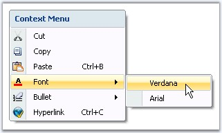
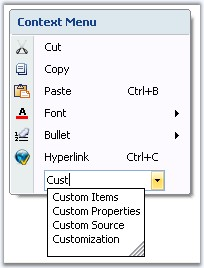

The following are the ToolStripItems which can be added as menu items to the ContextMenuStripEx control.
The ToolStripMenuItem supports all the general properties of a ToolStripItems. This section will walk you through the unique properties with their description for the ToolStripMenuItem.
|
Property |
Description |
|
Checked |
Indicates whether the item is in the checked state.
Note: This will be displayed only if ContextMenuStripEx.ShowCheckMargin property is set to true. |
|
Image |
Sets the image for the menu item. This image will be displayed only when the ContextMenuStripEx.ShowImageMargin is true and DisplayStyle is Image or ImageAndText. |
|
CheckedState |
Specifies the check state of the item. They can be Checked, Unchecked or Indeterminate. |
|
ShowShortcutkeys |
Indicates whether a shortcut key should be displayed in the menu item. User can access the particular menu item using this shortcut key specified in ShortcutKeys property. |
|
ShortcutKeys |
The shortcut key to be displayed for a menu item. |
|
ShortcutKeyDisplayString |
You can modify the ShortcutKey string, that is set, using the ShortcutKeyDisplayString property. |
|
AutoToolTip |
When set to true, will display the text set in the Text property as the item's tooltip. When set to false, will display the text set in the ToolTipText property. |
|
ToolTipText |
Sets the text for the tooltip when AutoToolTip is set to false. |
|
DropDown |
Specifies the ToolStripDropDown to be shown when the item is clicked. |
|
DropDownItems |
Invokes the Items Collection Editor and lets you add ToolStripItems to be displayed when the item is clicked. |
|
[C#]
this.pasteToolStripMenuItem.ShortcutKeys = ((System.Windows.Forms.Keys)((System.Windows.Forms.Keys.Control | System.Windows.Forms.Keys.B)));
this.fontToolStripMenuItem.DropDownItems.AddRange(new System.Windows.Forms.ToolStripItem[] { this.toolStripMenuItem1, this.toolStripMenuItem2});
this.hyperlinkToolStripMenuItem.ShortcutKeys = ((System.Windows.Forms.Keys)((System.Windows.Forms.Keys.Control | System.Windows.Forms.Keys.C))); |
|
[VB.NET]
Me.pasteToolStripMenuItem.ShortcutKeys = DirectCast(((System.Windows.Forms.Keys.Control Or System.Windows.Forms.Keys.B)), System.Windows.Forms.Keys)
Me.fontToolStripMenuItem.DropDownItems.AddRange(New System.Windows.Forms.ToolStripItem() {Me.toolStripMenuItem1, Me.toolStripMenuItem2})
Me.hyperlinkToolStripMenuItem.ShortcutKeys = DirectCast(((System.Windows.Forms.Keys.Control Or System.Windows.Forms.Keys.C)), System.Windows.Forms.Keys) |

Figure 1433: Context Menu items with ShortCut keys and Font Menu with DropDown Menu Items
This section lists the unique properties of a ToolStripComboBox item and their description.
|
Property |
Description |
|
FlatStyle |
Specifies the style of display of the control. The options are,
· Flat, · Popup, · Standard and · System. |
|
Items |
Invokes String Collection Editor which lets you add strings list to be displayed in the combobox. |
|
MaxDropDownItems |
Sets the maximum number of strings that should be displayed in the dropdown. |
|
MaxLength |
Specifies the maximum characters that can be entered into the combobox. |
|
DropDownHeight |
Sets the height for the DropDown. |
|
DropDownWidth |
Sets the width for the DropDown. |
|
IntegralHeight |
Indicates whether the combobox should resize to avoid showing partial items. |
|
Sorted |
Specifies whether the dropdown list should be sorted. |
|
AutoCompleteCustomSource |
Represents the custom source of string collection for the autocomplete feature, when AutoCompleteSource property is set to CustomSource. |
|
AutoCompleteSource |
Represents the source of strings used for autocompletion. The sources can be,
· FileSystem, · AllSystemSources (Default), · AllUrl, · CustomSource, · FileSystemDirectories, · HistoryList, · ListItems, · RecentlyUsedList and · None. |
|
AutoCompleteMode |
Indicates text completion behavior of the combo box. The modes are,
· Suggest - Displays the drop down list associated with the EditControl. This dropdown list is populated with one or more suggested completion strings, · Append - Appends the reminder of the most likely candidate string to the existing character, highlighting the appended character, and · SuggestAppend - Displays the drop down, also appends the highlighted string. |
AutoComplete Feature
|
[C#]
this.toolStripComboBox1.AutoCompleteCustomSource.AddRange(new string[] {"Customization", "Custom Properties", "Custom Source", "Custom Items", "Properties", "IssuesList"}); this.toolStripComboBox1.AutoCompleteMode = System.Windows.Forms.AutoCompleteMode.Suggest; this.toolStripComboBox1.AutoCompleteSource = System.Windows.Forms.AutoCompleteSource.CustomSource; |
|
[VB.NET]
Me.toolStripComboBox1.AutoCompleteCustomSource.AddRange(New String() {"Customization", "Custom Properties", "Custom Source", "Custom Items", "Properties", "IssuesList"}) Me.toolStripComboBox1.AutoCompleteMode = System.Windows.Forms.AutoCompleteMode.Suggest Me.toolStripComboBox1.AutoCompleteSource = System.Windows.Forms.AutoCompleteSource.CustomSource |

Figure 1434: AutoCompleteSource = "CustomSource"; AutoCompleteMode = "Suggest"
This section lists the unique properties of a ToolStripSeparator and their description.
|
Property |
Description |
|
BackColor |
Sets the back color for the separator. |
|
ForeColor |
Sets the fore color for the separator. |
|
AutoSize |
Determines whether the item should automatically size based on its image and text. |
|
Visible |
Sets the visibility of the separator. |
This section lists the unique properties of a ToolStripTextBox item and their description.
|
Property |
Description |
|
BorderStyle |
Sets the border style for the textbox. The styles available are,
· FixedSingle and · Fixed3D (Default). |
|
Lines |
Lets you open a String Collection Editor, using which multiline text can be entered. |
|
Text |
Specifies the text to be displayed on the item. |
|
TextBoxTextAlign |
Specifies the alignment of the text inside the textbox. |
|
AcceptsReturn |
Indicates if return characters are accepted as input. |
|
AcceptsTab |
Indicates if tab characters are accepted as input. |
|
CharacterCasing |
Indicates if the characters should be Normal or in Upper Case or in Lower Case. |
|
HideSelection |
Indicates whether the selection should be hidden when the control loses focus. |
|
MaxLength |
Maximum number of characters that can be entered into the control. |
|
ReadOnly |
Indicates whether the text in the textbox is read-only. |